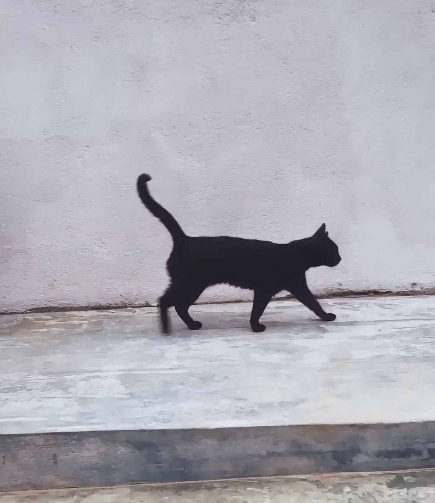
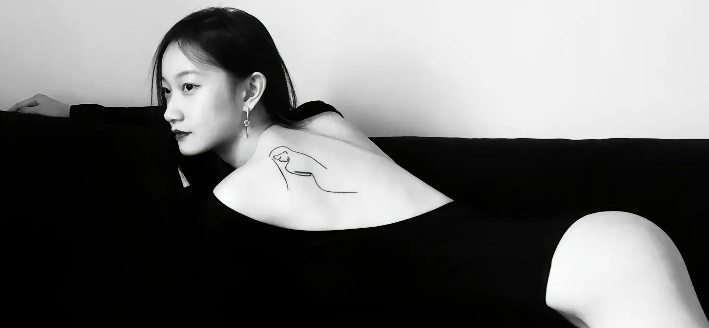

我身上纹身的故事。我总共有五个纹身
第一个和第二个是
大二时在巴厘岛
纹的。
那时候去做义工
，有一天晚上
我走在满
是纹身店的街头
，头脑一热便
随意进了一家
。
我在左脚踝纹了一只猫，用的是自己曾经在斯里兰卡做义工时拍到的一张黑猫照片。可能因为我从小就和猫比较投缘，岁岁年年里喂养了很多流浪猫。那个时候喂养流浪猫不像现在会受邻里反感，有很多因素要考量，那时我只是单纯觉得毛孩子可爱，又怕它们饿。
我记得有一只白猫，我给它取名“绒球”。每天放学我走到家楼下，呼喊一声“绒球”，它便会从大老远向我飞奔而来。后来我搬家了，也就再也没有见过绒球。


关于和猫的故事还有很多，多到大部分我已经记不清了，所以我把第一个纹身献给猫，纪念我们彼此在漫长成长里的短暂陪伴。至于这只黑猫，我们倒没有很深的羁绊，它只是碰巧从我最喜欢的一段时日里路过！
第二个纹身是在右手腕，纹了前任姓氏的第一个字母“L”，他也纹了我的姓氏“W”。
我记得我让他纹在了左手腕，这样每当我们牵手时，两个人的名字就会紧贴在一起。现在想想自己真是有够恋爱脑的！
总之，好的日子随着年少的热烈冲动很快也消逝了。我们在我来法国后分了手。
后来，我在巴黎把那个纹身改成了“世間山水”。
也是那时我才真正意识到，我的生活从来都不该是围着某个人的。我的世界，永远在更广阔的五湖四海，天地山水，和我独自前行的彼岸远方。

第三个纹身，是和大学最好的朋友一起在上海纹的。
我们是同班同学，但第一学年并不熟络。后来有一堂课需要分成四人小组，
我的同伴说她看起来很聪明很靠谱的样子，于是我们主动去找她拼成了一组。
再后来，她就慢慢成了我的“天才女友”。她是我见过最有才华的女子，从未停止过向内输入。写作，唱歌，乐器，摄影，多语种……好像没有她不擅长的。而这样的女子，上大学那会儿却总是败给微积分和Python，她抓耳挠腮抱怨和怪罪自己“笨”的模样至今还让我忍俊不禁。
但现在，她又偏偏从事着她曾不怎么喜欢的，涉及编程和算法的职业。
我们真正成为挚友是在大二那年的暑假，一起去土耳其做了志愿者后。
而她也是我爱上观察和记录生活的启蒙者。
其实和她一起纹的这个纹身并没有很特殊的意义，只是我当时欣赏的一个法国艺术家Quibe的作品，而她纹了质能方程：“E=mc2”。唉她可太有意思了！